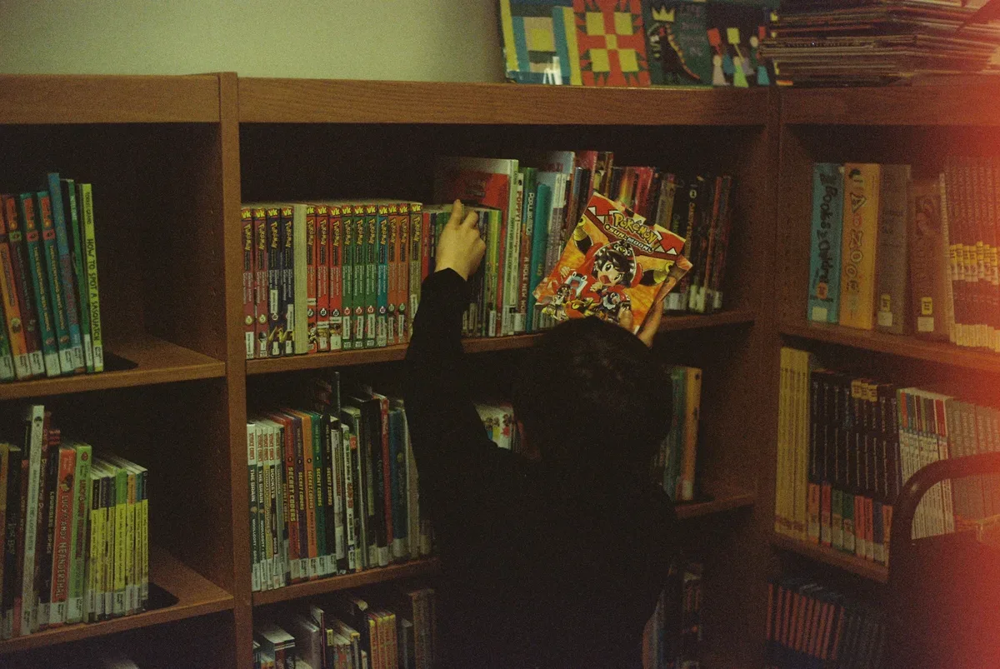
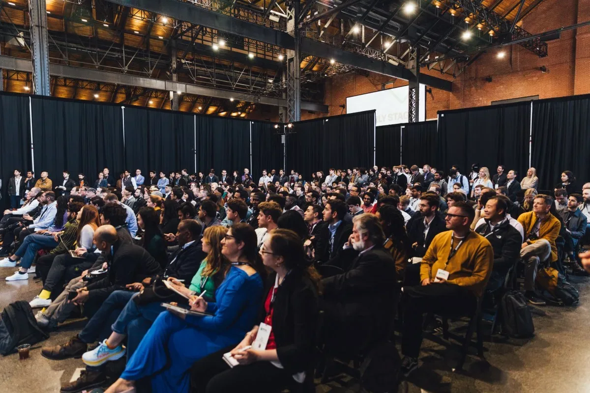
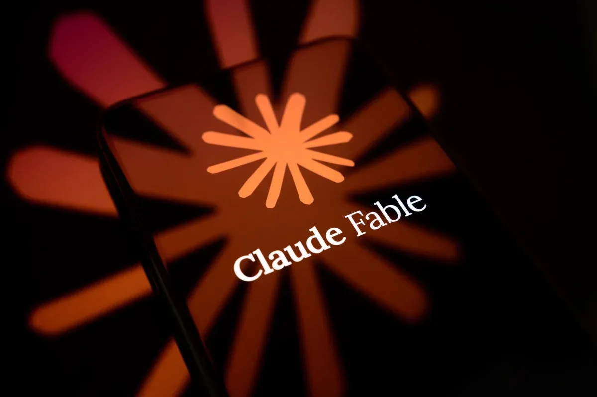
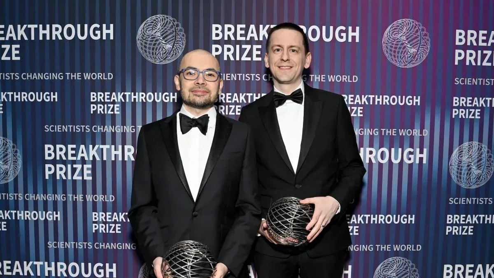

Индустрия
ИИ-улучшенные фото квартир: арендаторы платят за иллюзии
ИИ-меблировка квартир: как риелторы экономят на съёмках, а арендаторы теряют время
The Verge AI
22 июн.Бизнес-новости об искусственном интеллекте: продукты, партнёрства, рыночные тренды и релизы компаний со всего мира.
301 материалов
ИИ-меблировка квартир: как риелторы экономят на съёмках, а арендаторы теряют время
Reflection ИИ платит $150 млн в месяц за доступ к чипам Nvidia GB300 через SpaceX
Amazon приглашает индийских пользователей протестировать Alexa+ на хинди.
Google DeepMind инвестирует $75 млн в A24 для совместной разработки ИИ-инструментов для кино. Подробности.

Micron инвестировала в Anthropic и будет поставлять HBM и SSD для обучения Claude.

Google DeepMind сделала Interactions API основным интерфейсом для Gemini, заменив generateContent.

Как книги для подростков оказываются во взрослых отделах — и кто за этим стоит.
Джейк Ханрахан о том, как YouTube и ИИ-модерация ограничивают независимые репортажи
Городок Ипсиланти против ядерного дата-центра: жители требуют от совета «рвать дороги, нарушать закон».

Скидка до $190 на билеты до 26 июня: TechCrunch Founder Summit 2026 в Бостоне

Как консалтинговая фирма с помощью ИИ за несколько часов создаёт прототипы софта, влияющие на миллиардные сделки.

Five Eyes: передовые ИИ-модели изменят кибероперации за месяцы

Google DeepMind и A24 запускают исследовательское партнёрство по ИИ в кинопроизводстве

Getty Images интегрирует лицензионные фото в ChatGPT: акции взлетели на 200%

Проект-менеджер запустил сайт с помощью ИИ, а через месяцы обнаружил SQL-инъекцию. Это лишь одна из тысяч похожих историй.

Правительство сократило законопроект об ИИ до 13 статей, оставив поддержку только для моделей от 1 млрд параметров.

Генеративный ИИ в «Росгосстрахе»: анализ 100% звонков и сокращение времени диалога на 7%

Исследование Sitronics Group: половина сотрудников готова доверить секреты ИИ-ботам, а ущерб от киберпреступлений превысил 200 млрд руб.

80% компаний используют генеративный ИИ в разработке, но 40% считают риски критичными — исследование «Солар» и УЦСБ.

Fugu от Sakana ИИ — оркестратор LLM, сравниваемый с Anthropic и снижающий зависимость от одного вендора

Samsung разворачивает ChatGPT Enterprise и Codex в Южной Корее

Anthropic сняла с производства модели Fable 5 и Mythos 5 из-за экспортного контроля — эксперты считают это чрезмерным.
Практические ИИ-функции iOS 27: разделение счета, обновление паролей, умные подсказки и контекст звонков

Рост оценок A на 30% после ChatGPT — не заслуга студентов, а следствие использования ИИ в домашних заданиях

AWS закрывает пробелы в безопасности и контексте ИИ-агентов

Сэм Альтман ответил критикам масштабирования ИИ: данные подтверждают успех, но есть ограничения.
Мередит Уиттакер: ИИ-чатботы не сознательны, а Copilot в чатах — угроза приватности
Бывшие сотрудники OpenAI запустили In the Weights — сайт, показывающий, насколько хорошо языковые модели помнят пользователей без веб-поиска.
Журналисты собрали датасеты с Lady Gaga и Radiohead – проверьте, чья музыка попала в тренировку ИИ

Нобелевский лауреат Джон Джампер покинул DeepMind и перешёл в Anthropic — новый этап в гонке ИИ-талантов.